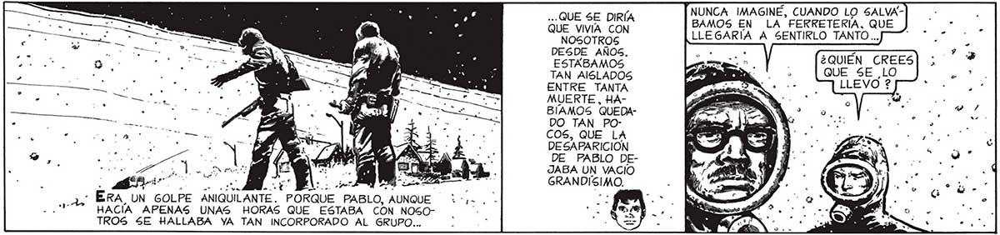
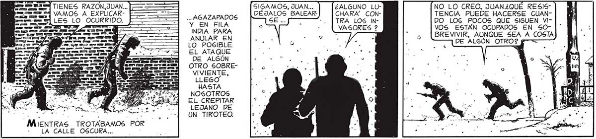

; NUNCA IMAGINE, CUANDO LO SALVAA o BAMOS EN LA FERRETERIA, QUE NOSOTROS LLEGARÍA A SENTIRLO TANTO... DESDE AÑOS. E.” >? + ESTABAMOS E ¿QUIEN CREES TAN AISLADOS DA. : LQUE SE LO ENTRE TANTA pa MUERTE, HABIAMOS QUEDADO TAN POCOS, QUE LA DESAPARICIÓN DE PABLO DELa pet DET le, JABA UN VACIO y E AL Des » GRANDISIMO. - ERA UN GOLPE ANIQUILANTE. PORQUE PABLO, AUNQUE | á HACÍA APENAS UNAS HORAS QUE ESTABA CON NOSOTROS SE HALLABA YA TAN INCORPORADO AL GRUPO... NO PUEDE SER Ñ OTRO QUE AlÑ GÚN SOBREVIVIENTE. O ALÍ GUNOS.LES TENTARÍA EL CA” MION, PABLO INCLUSO. CON TAL QUE NO LO HAYAN HEDe NUEVO OTRA ESFERA INCANDES- ¿4 CENTE CAYO” DE LO jua MEJOR NOS IN VEZ EA VAMOS, JUAN... PERDONA, FAVA, DEBEMOS PERKO YO QUIBUSCAR ERE ASIERA VOLVER CAMION. E ANTES A CASA. MARTITA Y ELENA ESTARAN MUV ALARMADAS... HEMOS TARDADO YA MUCHO MAS DE LO QUE CALCULA" Es yaaa SIGAMOS, JUAN... ¿ALGUNO LU- NO LO CREO, JUAN.¿QUEÉ RESIS5AGAZAPADOS DÉJALOS BALEAR CHARA” CON- TENCIA PUEDE HACERSE CUAN"Y EN FILA SE .. "| TRA LOS IN- DO LOS POCOS QUE SIGUEN VIINDIA PARA ps , VASORES ? VOS ESTÁN OCUPADOS EN 50: .. : BREVIVIR, AUNQUE SEA A COSTA A EN A" ; E DE ALGÚN OTRO? $ LO POSIBLE 7 - , . ] EL ATAQUE bi oo. . DE ALGÚN OTRO SOBREVIVIENTE, LLEGO” HASTA NOSOTROS EL CREPITAR LEJANO DE a a ' eN UN TIROTEO. MIENTRAS TROTABAMOS POR - LA CALLE OSCURA...

